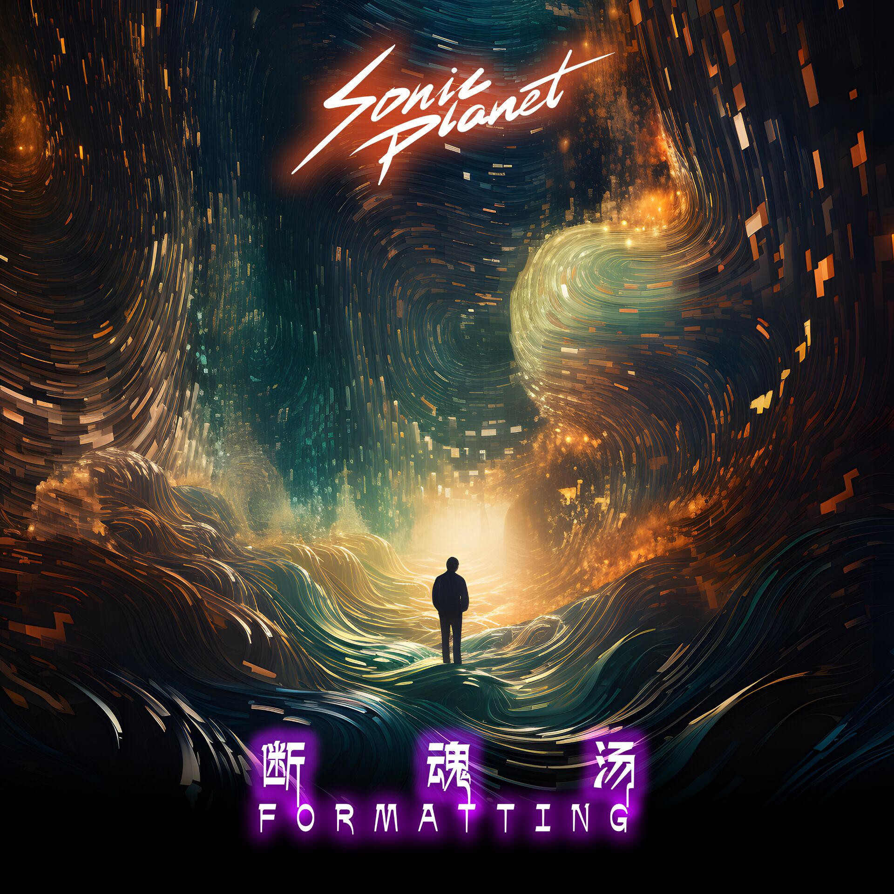
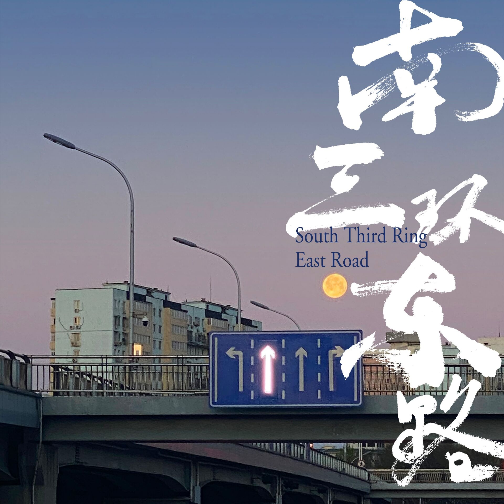
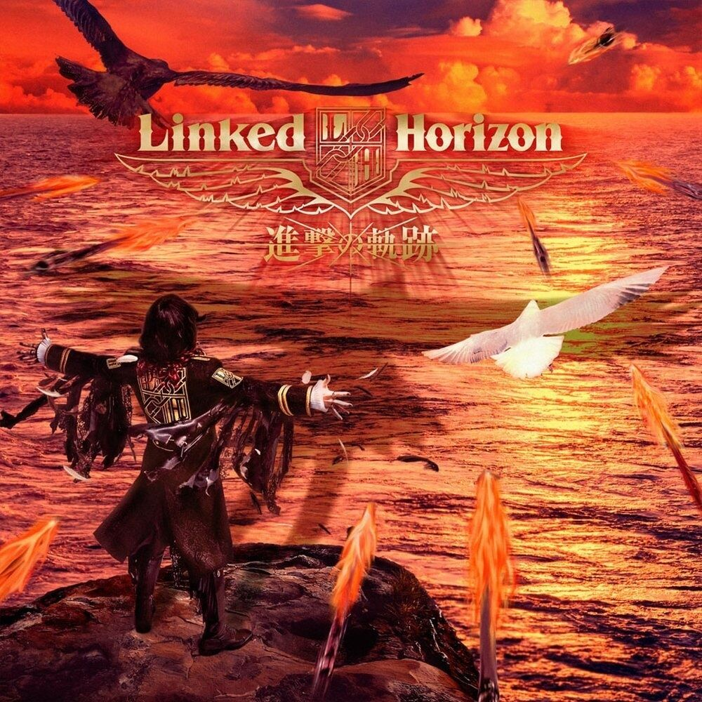

推荐歌单
浪漫·沉醉·音梦
浪漫不一定非要一束花，也可以是一首旋律在耳边轻轻荡漾。
沉醉也是一种美，像是被音符包裹的温馨小屋，欢迎你来聆听。
这里是“浪漫·沉醉·音梦”歌单，专属于你的音乐时光。
欢迎投稿，让我们一起共创美好的音乐世界，持续更新哦～
无人区野花
歌手: 兰音Reine
专辑: 无人区野花
时长: 3:16
发行时间: 2022-10-28
曲风: 流行-华语流行 语种: 国语

断魂汤 (Formatting)
歌手: 音速行星
专辑: 断魂汤 (Formatting)
时长: 4:53
发行时间: 2023-07-29
曲风: 电子 语种: 华语

南三环东路
歌手: DOUDOU
专辑: 南三环东路
时长: 6:16
发行时间: 2022-04-05
曲风: 摇滚-独立摇滚 语种: 国语Heiwa Sanka
歌手: Autodidactic Studios
专辑: Legend of Chongyue
时长: 2:51
发行时间: 2023-07-28
曲风: 原声带 语种: 日语悬溺
歌手: 葛东琪
专辑: 第二街区
时长: 3:17
发行时间: 2019-10-18
曲风: 流行-华语流行 语种: 国语

Call of Silence
歌手: R!N/Gemie
专辑: TVアニメ「進撃の巨人」Season 2
时长: 2:58
发行时间: 2017-06-07
曲风: 原声带 语种: 英语发现更多精彩音乐，开启属于你的音乐之旅。
立即浏览歌单列表，寻找你喜欢的音乐。
浏览歌单